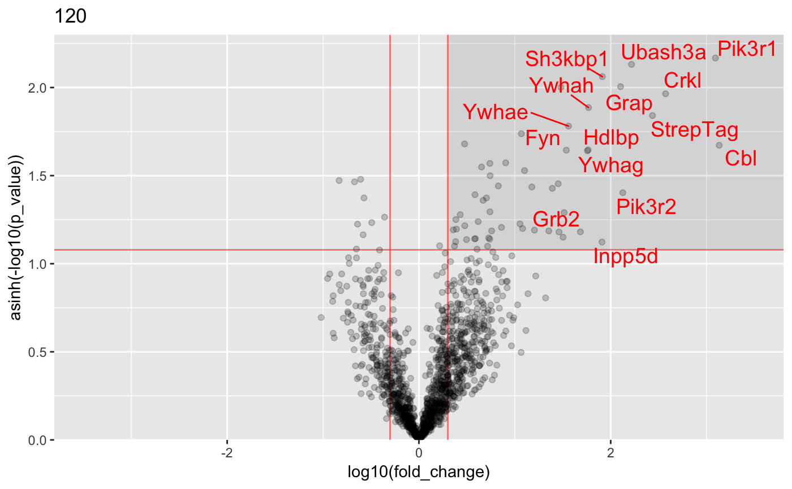
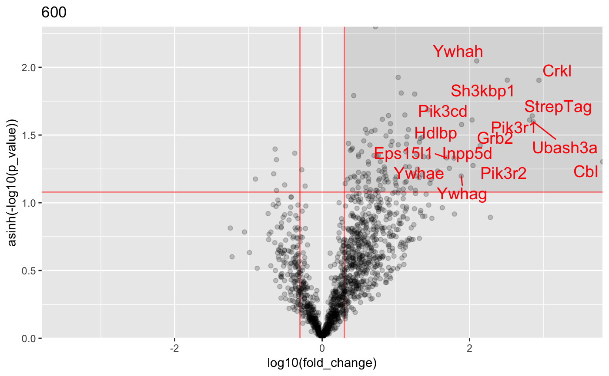
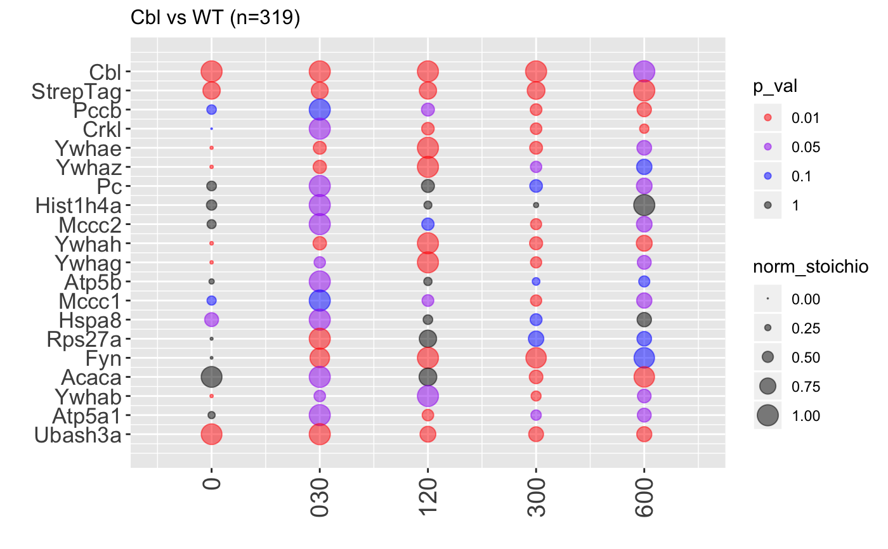

Analysis of AP-MS data
InteRact(df, updateProgress = NULL, N_rep = 1, method = "default", quantile_rep = 0.05, pool_background = FALSE, log_test = TRUE, log_stoichio = TRUE, log_mean = TRUE, by_conditions = TRUE, substract_ctrl = TRUE, use_mean_for_bait = FALSE, preprocess_df = NULL, ...)
| df | A dataframe containing protein intensities. By default, protein intensity column names start by "Intensity."
(use parameter |
|---|---|
| updateProgress | function to show progress bar in shiny app |
| N_rep | Number of iterations for the replacement of missing values |
| method | Method to replace missing values. Methods from the "mice" package are supported.
Use "none" if you do not want to replace missing values. By default, missing values are sampled from a
normal distribution centered on the quantile of ctrl intensities defined by parameter |
| quantile_rep | Numeric value between 0 and 1. Quantile of the distribution of mean intensities in the control background used to replace missing values. |
| pool_background | option to use all control background conditions as one control group for all conditions |
| log_test | logical, perform t-test on log transform intensities |
| log_stoichio | logical, use the geometric mean instead of the arithmetic mean to compute stoichiometries |
| log_mean | logical, use the geometric mean instead of the arithmetic mean to compute the mean |
| by_conditions | option to perform the comparison between bait and control group for each condition |
| substract_ctrl | logical, substract ctrl intensities in the calculation of stoichiometries |
| use_mean_for_bait | logical, average bait intensities across all conditions to compute interaction stoichiometries |
| preprocess_df | list obtained by the function |
| ... | Additional parameters passed to function |
a list containing the preprocessed data and on object of class InteRactome, i.e a list including the following elements :
conditions : a vector of experimental conditions.
names : a vector of names (by default gene names are used).
p_val : a list of vectors containing the p values associated to each experimental condition.
fold_change : a list of vectors containing the fold change associated to each experimental condition.
... : other variables.
#load data : data("proteinGroups_Cbl") #Run InteRact with default parameters res <- InteRact(proteinGroups_Cbl, bait_gene_name = "Cbl")#> Warning: Column 'Score' not available : Data NOT Filtered based on portein identification score#> Contaminant proteins discarded #> Proteins with no gene name available discarded #> Number of theoretically observable peptides unavailable : used MW instead #> Merge protein groups associated to the same gene name (sum of intensities) #> Rescale median intensity across conditions #> Replace missing values and perform interactome analysis for 1 replicates #> Nrep=1 #> Averaging 1 interactomes#> Warning: NaNs produced#> Warning: NaNs produced#> Warning: NaNs produced#> Warning: NaNs produced#> Warning: NaNs produced#> Warning: NaNs produced#> Warning: NaNs produced#> Warning: NaNs produced#> Warning: NaNs produced#> Warning: NaNs produced#> Warning: NaNs produced#> Warning: NaNs produced#> Warning: NaNs produced#> Warning: NaNs produced#> Warning: NaNs produced#> Warning: NaNs produced#> Warning: NaNs produced#> Warning: NaNs produced#> Warning: NaNs produced#> Warning: NaNs produced#> [1] "InteRactome"names(res)#> [1] "bait" "bckg_bait" "bckg_ctrl" "conditions" #> [5] "replicates" "names" "Protein.IDs" "Npep" #> [9] "p_val" "fold_change" "stoichio" "stoichio_bio" #> [13] "data" "params" "max_stoichio" "max_fold_change" #> [17] "min_p_val" "norm_stoichio"#> [[1]]#> #> [[2]]#> #> [[3]]#> #> [[4]]#> #> [[5]]#>#Identify specific interactors res <- identify_interactors(res, p_val_thresh = 0.05, fold_change_thresh = 2) #Visualize interaction kinetics plot_per_condition(res)#> $plot#> #> $idx_order #> [1] 1 2 3 4 5 6 7 8 9 10 11 12 13 14 15 16 17 18 19 20 #>#> Creating annotation table... #> | | | 0% | | | 1% | |= | 1% | |= | 2% | |== | 2% | |== | 3% | |== | 4% | |=== | 4% | |=== | 5% | |==== | 5% | |==== | 6% | |===== | 6% | |===== | 7% | |===== | 8% | |====== | 8% | |====== | 9% | |======= | 9% | |======= | 10% | |======= | 11% | |======== | 11% | |======== | 12% | |========= | 12% | |========= | 13% | |========= | 14% | |========== | 14% | |========== | 15% | |=========== | 15% | |=========== | 16% | |============ | 16% | |============ | 17% | |============ | 18% | |============= | 18% | |============= | 19% | |============== | 19% | |============== | 20% | |============== | 21% | |=============== | 21% | |=============== | 22% | |================ | 22% | |================ | 23% | |================ | 24% | |================= | 24% | |================= | 25% | |================== | 25% | |================== | 26% | |=================== | 26% | |=================== | 27% | |=================== | 28% | |==================== | 28% | |==================== | 29% | |===================== | 29% | |===================== | 30% | |===================== | 31% | |====================== | 31% | |====================== | 32% | |======================= | 32% | |======================= | 33% | |======================= | 34% | |======================== | 34% | |======================== | 35% | |========================= | 35% | |========================= | 36% | |========================== | 36% | |========================== | 37% | |========================== | 38% | |=========================== | 38% | |=========================== | 39% | |============================ | 39% | |============================ | 40% | |============================ | 41% | |============================= | 41% | |============================= | 42% | |============================== | 42% | |============================== | 43% | |============================== | 44% | |=============================== | 44% | |=============================== | 45% | |================================ | 45% | |================================ | 46% | |================================= | 46% | |================================= | 47% | |================================= | 48% | |================================== | 48% | |================================== | 49% | |=================================== | 49% | |=================================== | 50% | |=================================== | 51% | |==================================== | 51% | |==================================== | 52% | |===================================== | 52% | |===================================== | 53% | |===================================== | 54% | |====================================== | 54% | |====================================== | 55% | |======================================= | 55% | |======================================= | 56% | |======================================== | 56% | |======================================== | 57% | |======================================== | 58% | |========================================= | 58% | |========================================= | 59% | |========================================== | 59% | |========================================== | 60% | |========================================== | 61% | |=========================================== | 61% | |=========================================== | 62% | |============================================ | 62% | |============================================ | 63% | |============================================ | 64% | |============================================= | 64% | |============================================= | 65% | |============================================== | 65% | |============================================== | 66% | |=============================================== | 66% | |=============================================== | 67% | |=============================================== | 68% | |================================================ | 68% | |================================================ | 69% | |================================================= | 69% | |================================================= | 70% | |================================================= | 71% | |================================================== | 71% | |================================================== | 72% | |=================================================== | 72% | |=================================================== | 73% | |=================================================== | 74% | |==================================================== | 74% | |==================================================== | 75% | |===================================================== | 75% | |===================================================== | 76% | |====================================================== | 76% | |====================================================== | 77% | |====================================================== | 78% | |======================================================= | 78% | |======================================================= | 79% | |======================================================== | 79% | |======================================================== | 80% | |======================================================== | 81% | |========================================================= | 81% | |========================================================= | 82% | |========================================================== | 82% | |========================================================== | 83% | |========================================================== | 84% | |=========================================================== | 84% | |=========================================================== | 85% | |============================================================ | 85% | |============================================================ | 86% | |============================================================= | 86% | |============================================================= | 87% | |============================================================= | 88% | |============================================================== | 88% | |============================================================== | 89% | |=============================================================== | 89% | |=============================================================== | 90% | |=============================================================== | 91% | |================================================================ | 91% | |================================================================ | 92% | |================================================================= | 92% | |================================================================= | 93% | |================================================================= | 94% | |================================================================== | 94% | |================================================================== | 95% | |=================================================================== | 95% | |=================================================================== | 96% | |==================================================================== | 96% | |==================================================================== | 97% | |==================================================================== | 98% | |===================================================================== | 98% | |===================================================================== | 99% | |======================================================================| 99% | |======================================================================| 100% #> Done. #> Append annotation to interactome... #> Done.